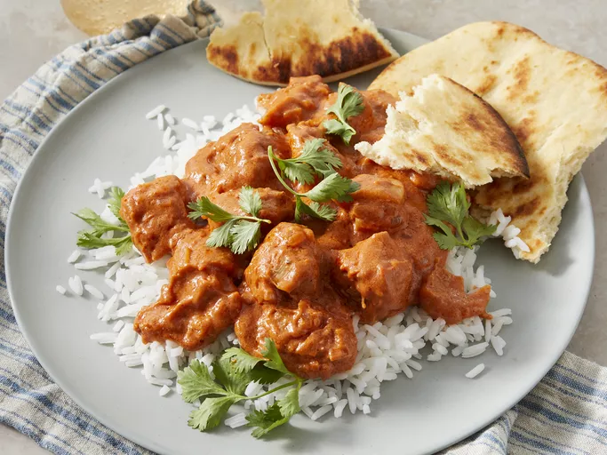

Chicken Makhani (Indian Butter Chicken)

This butter chicken recipe, or chicken makhani, is one of my favorite Indian dishes.
It features a full-flavored sauce that complements the chicken well. It can be made
as mild or spicy as you wish by adjusting the cayenne. Serve with basmati rice and naan
bread.
Ingredients
- 2 tablespoons peanut oil, divided
- 1 shallot, finely chopped
- < ¼ white onion, chopped
and much more.....
Steps to make
- Heat 1 tablespoon oil in a large saucepan over medium-high heat. Sauté shallot and onion until soft and translucent, about 5 minutes.
- Stir in butter, ginger-garlic paste, lemon juice, 1 teaspoon garam masala, chili powder, cumin, and bay leaf. Cook and stir for 1 minute. Add tomato sauce, and cook for 2 minutes, continuing to frequently stir.
- Stir in half-and-half and yogurt. Reduce heat to low, and simmer for 10 minutes, frequently stirring. Season with salt and pepper. Remove from heat and set aside.
- Heat remaining 1 tablespoon oil in a large heavy skillet over medium heat. Cook chicken until lightly browned, about 10 minutes.
- Reduce heat, and season with remaining 1 teaspoon garam masala and cayenne. Stir in a few spoonfuls of sauce, and simmer until liquid has reduced, and chicken is no longer pink. Add cooked chicken into sauce and stir together.
- Dissolve cornstarch into water, then mix into the sauce. Cook for 5 to 10 minutes, or until thickened.
- Serve over rice with naan.